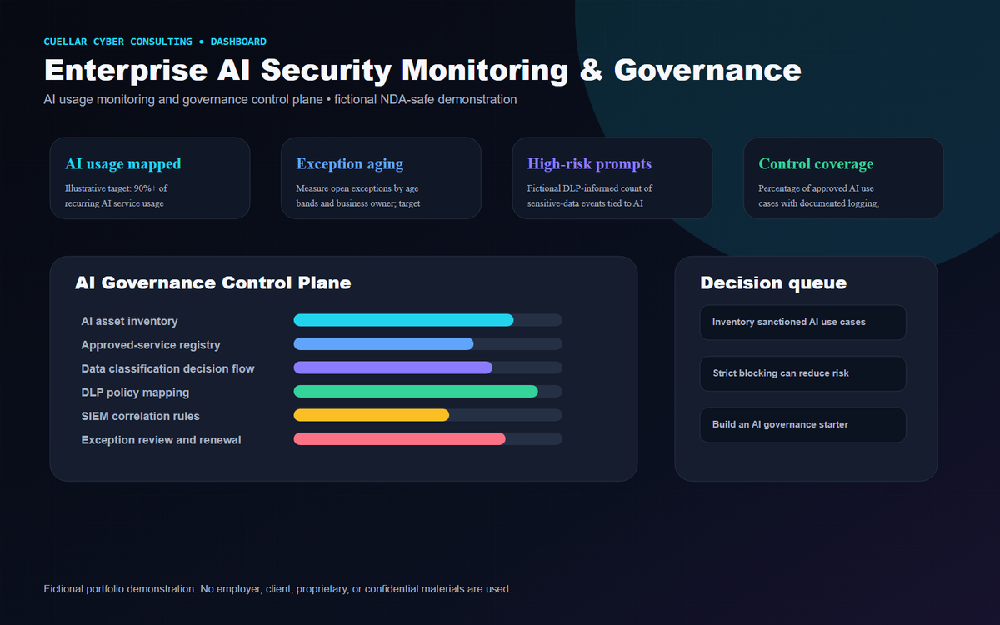
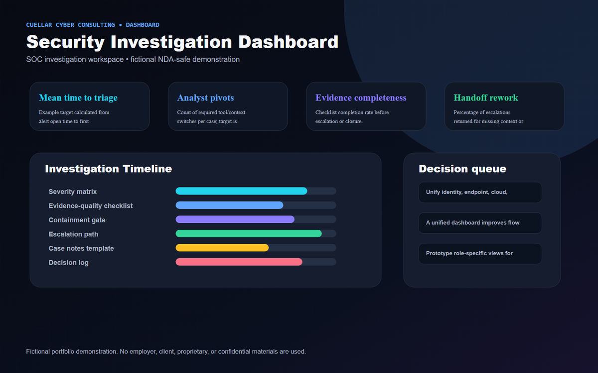
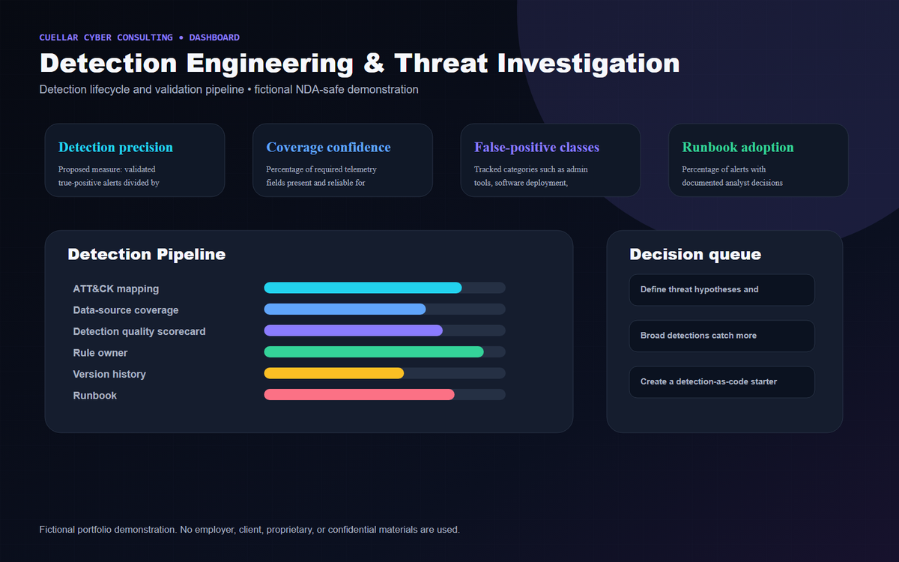
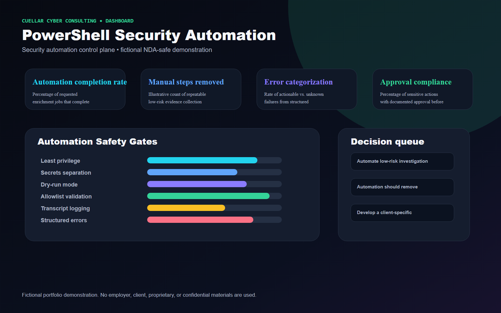
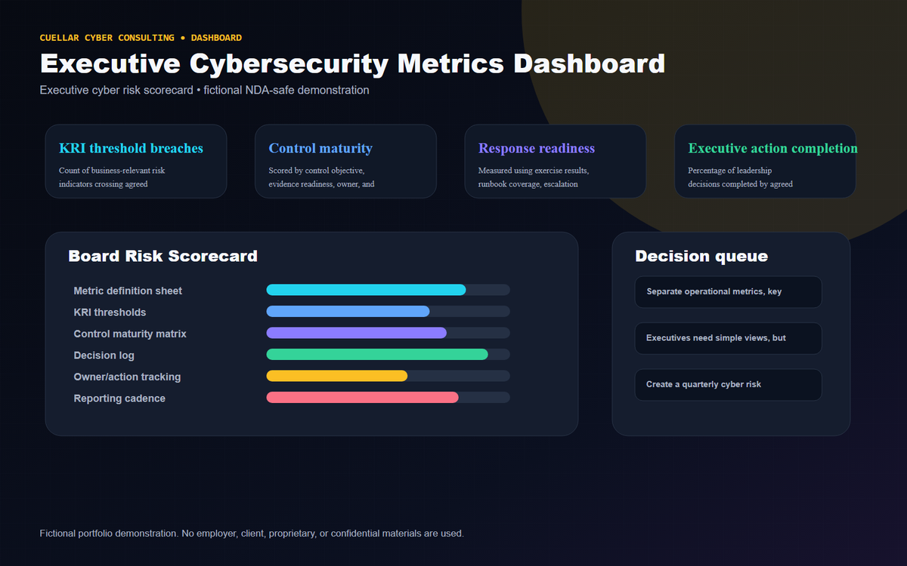

Fictional Case Study
Enterprise AI Security Monitoring & Governance
AI usage visibility, governance workflows, DLP-informed risk scoring, and executive reporting for responsible GenAI adoption.
View Case StudyEnterprise Security Engineering • AI Security • Detection Automation
Cuellar Cyber Consulting helps organizations improve threat visibility, reduce analyst friction, govern AI adoption, automate repeatable security work, and communicate cyber risk in a way leaders can act on.
Fictional portfolio demonstration. No employer, client, proprietary, or confidential materials are used.
About
Andrew approaches cybersecurity as a practical system of technical detection, operational workflow design, governance, automation, risk communication, and executive decision support. The work is designed to help teams move from unclear security signals to repeatable processes, documented decisions, and measurable outcomes.
Strong security work should be technically defensible, operationally usable, and safe to discuss with leadership. These fictional case studies show how Andrew thinks through architecture, analyst workflow, control ownership, validation, documentation, and executive reporting without exposing confidential information.
Expertise
Organized around the work a client can hire Andrew to deliver: security operations, AI governance, detection design, guarded automation, executive reporting, and insider-risk data protection.
Selected case studies
Each case study is a fictional, NDA-safe consulting artifact with business risk, technical approach, workflows, controls, deliverables, success measures, and next-phase recommendations.

Fictional Case Study
AI usage visibility, governance workflows, DLP-informed risk scoring, and executive reporting for responsible GenAI adoption.
View Case Study
Fictional Case Study
Unified SOC workflow for entity context, alert chronology, evidence collection, analyst decisions, and case handoff.
View Case Study
Fictional Case Study
A detection lifecycle from hypothesis to telemetry mapping, validation, tuning, deployment, runbooks, and retirement decisions.
View Case Study
Fictional Case Study
Guarded automation patterns for evidence collection, enrichment, configuration validation, logging, approvals, and rollback planning.
View Case Study
Fictional Case Study
Leadership reporting that separates operational metrics, KPIs, KRIs, and executive decisions for security program accountability.
View Case StudyConsulting methodology
Clarify business goals, environment assumptions, stakeholders, and confidentiality boundaries before designing anything.
Separate operational pain from business risk, define success measures, and document constraints.
Identify relevant threat behaviors, abuse paths, data sensitivity, and control expectations.
Translate requirements into data flows, governance checkpoints, dashboards, detections, or automation workflows.
Create build backlog, owners, dependencies, validation plan, and rollout sequence.
Use representative fictional or client-approved test data to validate logic, usability, and control behavior.
Document runbooks, decision points, maintenance owners, and escalation paths.
Connect technical evidence to leadership decisions, trend visibility, and accountability.
Review false positives, stale exceptions, changing threats, and dashboard usefulness over time.
Engagement lifecycle
Depending on scope, deliverables may include architecture diagrams, security workflows, detection designs, dashboard mockups, risk assessments, governance frameworks, runbooks, implementation roadmaps, executive summaries, or technical documentation.
Discuss the security problem, environment, constraints, timeline, and desired business outcome.
Define what will be delivered and how success will be evaluated.
Review approved artifacts, data sources, workflows, dashboards, or detection inventory.
Create diagrams, mockups, workflows, rule designs, automation plans, or documentation.
Test assumptions, review edge cases, confirm technical feasibility, and refine outputs.
Deliver editable artifacts, runbooks, metric definitions, and implementation guidance.
Walk through how to use, maintain, and adapt the deliverables.
Summarize decisions, risks, next steps, and recommended roadmap.
Why clients hire Cuellar Cyber Consulting
The case studies show telemetry, detection, governance, and automation designs that end in leadership decisions.
Designs include ownership, handoff, validation, evidence, and reporting—not isolated artifacts.
The flagship case study connects AI usage monitoring, DLP, exceptions, control coverage, and NIST AI RMF concepts.
Deliverables emphasize runbooks, quality scorecards, approval gates, and lifecycle management.
Every artifact is fictional and explicitly avoids employer-specific materials, dashboards, data, terminology, and code.
Contact / Upwork CTA
Start with an Upwork conversation. Share the business problem, approved non-confidential context, desired timeline, and what decision the final deliverable should support.
Fictional portfolio demonstration. No employer, client, proprietary, or confidential materials are used. The organizations, data, metrics, incidents, dashboards, diagrams, workflows, and examples are fictional. They do not reproduce, approximate, or visually imitate employer-specific or client-specific materials.